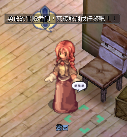

露西 · MVP Exchange
NPC Lucy (露西)
Prontera-Rezeption für MVP-Belohnungsboxen und das Crafting von Blacksmith Blessing — unverzichtbar für jeden MVP-Farmer und Refiner.
📍 NPC & Standort
Lucy (露西) — Midgard Receptionist
Position: prt_in 44 120 (innerhalb Prontera)

📋 NPC Interaktion — Deutsch aufklappen
Ein NPC namens Lucy fordert Abenteurer auf, eine Jagdquest anzunehmen.
- NPC Name: Lucy
- Dialog: Mutige Abenteurer, nehmt die Jagdquest an!!
Der NPC trägt ein Ausrufezeichen-Icon über dem Kopf, das auf eine verfügbare Quest hinweist.
🔄 Exchange-Rezepte
1. MVP-Box
Input: 50 × MVP Breath Fragment (MVP氣息碎片)
Output: 1 × MVP Hunt Reward Box — Normal (MVP討伐獎勵箱-一般)
2. Blacksmith Blessing (Goblin-Shard-Pfad)
Input: 10 × Goblin Shard (哥布靈碎幣) + 30 × Blacksmith Blessing Powder (鐵匠的祝福粉末)
Output: 1 × Blacksmith Blessing (鐵匠的祝福)
3. Blacksmith Blessing (Jesta-Pfad)
Input: 30 × Jesta (傑斯塔) + 30 × Blacksmith Blessing Powder
Output: 1 × Blacksmith Blessing
Blacksmith Blessing ist das Refine-Safety-Item, mit dem hochstufige Refines ohne Verlustrisiko durchgeführt werden können — praktisch Gold wert.
💡 Praxis-Tipps
- MVP-Breath-Fragments: Werden beim MVP-Kampf oder über MVP-Belohnungen gedroppt — 50 Stück = eine Box
- Pfad-Vergleich: Shard-Pfad nutzt Goblin-Währung (siehe Flight-Seeking Golem), Jesta-Pfad kommt aus anderen Events — je nach aktuellem Stock den günstigeren wählen
- Powder-Supply: Das Powder ist limitierender Faktor — rechtzeitig farmen
⚠️ Hinweise
Lucy's Rezept-Raten und Reward-Inhalte können mit Patches angepasst werden. Aktuell auf der Originalseite.